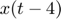

Práctica 3: Señales continuas
Grupo: 2TV1
Materia: Señales y Sistemas
Alumnos:
Aparicio Espinoza Octavio Joel
Gonzalez Plata Jose Enrique
Morales Rodriguez Diego Emilio
Morales Vazquez Pedro Benigno
Profesor: Dr. Rafael Martínez Martínez
Contents
Objetivos
- Manipulación básica de MATLAB
- Gráficas de señales reales y complejas continuas
- Transformación de señales continuas (escalamientos y traslaciones)
- Calculo de energía y potencia de señales continuas
Introducción
Historia de matlab:
El primer MATLAB® no era un lenguaje de programación; Era una simple calculadora de matriz interactiva. No había programas, ni cajas de herramientas, ni gráficos. Y no ODEs o FFTs.
La base matemática para la primera versión de MATLAB fue una serie de trabajos de investigación de JH Wilkinson y 18 de sus colegas, publicados entre 1965 y 1970 y luego recopilados en Handbook for Automatic Computation, Volume II, Linear Algebra, editado por Wilkinson y C. Reinsch Estos documentos presentan algoritmos, implementados en Algol 60, para resolver problemas de ecuaciones lineales de matrices y valores propios.
En 1983, Jack Little sugirió la creación de un producto comercial basado en MATLAB. La PC IBM® se había presentado solo dos años antes. Apenas era lo suficientemente potente como para ejecutar un programa como MATLAB, pero Little anticipó su evolución. Dejó su trabajo, compró un clon de PC Compaq ® en Sears, se mudó a Stanford y junto a Cleve Moler y Steve Bangert escribieron una versión nueva y extendida de MATLAB en C.
Alternativas de código abierto:
- GNU Octave: Puede ser la alternativa más conocida a MATLAB. En desarrollo activo durante casi tres décadas, Octave se ejecuta en Windows, Mac y Linux, y está empaquetado para la mayoría de las distribuciones principales.
- Scilab: Es otra opción de código abierto para computación numérica que se ejecuta en todas las plataformas principales: Windows, Mac y Linux incluidos. Scilab es quizás la alternativa más conocida fuera de Octave, y (como Octave) es muy similar a MATLAB en su implementación, aunque la compatibilidad exacta no es un objetivo de los desarrolladores del proyecto.
- Python: Python es un lenguaje de programación general (como Java, C, C++,…). En principio no tiene nada que ver con matlab. Sin embargo, existe unas bibliotecas de cálculo científico para Python que permite incluir casi la misma funcionalidad en un lenguaje de programación general.
- Julia:: Es un lenguaje de programación homoicónico, multiplataforma y multiparadigma de tipado dinámico de alto nivel y alto desempeño para la computación genérica, técnica y científica, con una sintaxis similar a la de otros entornos de computación similares
- SageMath: Es otro sistema de software de matemáticas de código abierto que podría ser una buena opción para aquellos que buscan una alternativa de MATLAB. Está construido sobre una variedad de conocidas bibliotecas de computación científica basadas en Python, y su propio lenguaje es sintácticamente similar a Python. Tiene muchas características que incluyen una interfaz de línea de comandos, cuadernos basados en navegador, herramientas para incrustar fórmulas en otros documentos y, por supuesto, muchas bibliotecas matemáticas.
Desarrollo parte 1
Crea una función que se llame fun1 y reciba dos parametros y la función debe regresar la evaluación , esta función debe trabajr con y . Debe mostrar su código en el reporte (sin ejecutar).
function w=fun1(t,a) if(isreal(a)) w=a./(t.^2+a^2); else display("Solo numeros reales"); end end
Desarrollo parte 2
Construya una función que gráfique funciones de en el formato de su elección y pruebe su código mostrando la gráfica de vs en el intervalo para , no debe incluir el código, solo el uso de la función para mostrar la gráfica
graficar(-2:0.1:2,fun1(-2:0.1:2,1));

Donde el primer argumento es el vector que define el intervalo sobre el que se evaluara la funcion.
El segundo argumento, como se puede apreciar, es la funcion evaluada en ese vector. En este caso la funcion del ejercicio anterior, fun1, con a=1.
Desarrollo parte 4
Realiza las mismas operaciones que Lathi en las secciones M1.1 a M1.4 que se encuentra al final del capítulo 1 y antes de la sección de problemas, cambie los inline por funciones anonimas
SECCION M1.1: Funciones en linea(Inline)
f = @(t) exp(-t).*cos(2*pi*t); t = 0; f(t) f(0) t = (-2:2); f(t) plot(t,f(t)); xlabel('t'); ylabel('f(t)') grid;
ans =
1
ans =
1
ans =
7.3891 2.7183 1.0000 0.3679 0.1353
t = (-2:0.01:2); plot (t,f(t)); xlabel('t'); ylabel('f(t)'); grid;
SECCION M1.2: Operadres relacionales y la función escalon unitario
u = @(t) t>=0; t=(-2:2); plot (t,u(t)); xlabel('t'); ylabel('u(t)');
t = (-2:0.01:2); plot (t,u(t)); xlabel('t'); ylabel('u(t)'); axis ([-2 2 -0.1 1.1]);
p = @(t) (t>=0) & (t<1); t = (-1:0.01:2); plot(t,p(t)); xlabel('t'); ylabel('p(t) = u(t)-u(t-1)'); axis ([-1 2 -.1 1.1]);
SECCION M1.3: Visualizando operaciones en una variable independiente
g = @(t) exp(-t).*cos(2*pi*t).*(t>=0); t = (-2:0.01:2); plot(t,g(2*t+1)); xlabel('t'); ylabel('g(2t+1)'); grid;
plot(t,g(-t+1)); xlabel('t'); ylabel('g(-t+1)'); grid;
plot(t,g(2*t+1) +g(-t+1)); xlabel('t'); ylabel('h(t)'); grid;
SECCION M1.4: Integración numerca y estimación de la energía de la señal
x = @(t) exp(-t).*((t>=0)&(t<1)); t = (0:0.01:1); E_x =sum(x(t).*x(t)*0.01) x_squared = @(t) exp(-2*t).*((t>=0)&(t<1)); E_x = quad(x_squared,0,1) g_squared = @(t) exp(-2*t).*(cos(2*pi*t).^2).*(t>=0); t = (0:0.001:100); E_g = sum(g_squared(t)*0.001) E_g = quad(g_squared, 0,100)
E_x =
0.4367
E_x =
0.4323
E_g =
0.2567
E_g =
0.2562
Desarrollo parte 5
Resuelve el problema 1.2.2 usando las herramientas del paso anterior.
Problema 1.2.2
Para la señal realice las graficas
a) 
b)
c)
d)
e)
x=@(t) ((-t).*((t<0)&(t>-4))) +((t).*((t>0)&(t<2)));
t=[-10:0.0001:10];
plot(t,x(t));
xlabel('t');
ylabel('x(t)');
a)
t=[-10:0.0001:10];
plot(t,x(t-4));
xlabel('t');
ylabel('x(t-4)');
b)
t=[-10:0.0001:10];
plot(t,x(t/1.5));
xlabel('t');
ylabel('x(t/1.5)');
c)
t=[-10:0.0001:10];
plot(t,x(-t));
xlabel('t');
ylabel('x(-t)');
d)
t=[-10:0.0001:10];
plot(t,x(2.*t-4));
xlabel('t');
ylabel('x(2t-4)');
e)
t=[-10:0.0001:10];
plot(t,x(2-t));
xlabel('t');
ylabel('x(2-t)');

Desarrollo parte 6
Escriba una función que se llame energia que reciba como argumento una función (anonima o simbolica) y que regrese el calculo de la energía, para esto puede resultar útil investigar las instrucciones int , integral Se presupone utilizar el código solo con funciones de energia. Muestre el código sin ejecutar, y posteriormente resuelva el problema 1.1.3
Función de energía
Tenemos la siguiente función:
function E = energia(f,a,b)
E=integral(abs(f).^2,a,b);
end
Los parametros de los que depende la energía en nuestra función son: la función, el limite inferior y el limite superior para integrar.
Desarrollo parte 7
Escriba una función que se llame potencia que reciba como argumento una función (anonima o simbolica) y que regrese el calculo de la potencia para esto puede resultar útil investigar las instrucciones int , integral Se presupone utilizar el código solo con funciones de potencia. Muestre el código sin ejecutar, y posteriormente resuelva el problema 1.1.4
function P = potencia(f,T)
P=(1/T) * integral(f,-T/2, T/2);
end
Problema 1.1.4 Encuentre la potencia de la señal periódica . Encuentra también las potencias y los valores rms de:
a)
b)
c)
Figura
x=@(t) t.^3;
t=-100:0.1:100;
plot(t,x(t))
title('Gráfica de la señal f(t)=t^3 ')
a)
f=(@(t) ((abs(-(t.^3))).^2));
p = potencia(x,4)
% RMS
rms = sqrt(p)
p = 1.1102e-16 rms = 1.0537e-08
b)
f=(@(t) ((abs(2.*(t.^3))).^2));
potencia(f,4)
% RMS
rms=sqrt(ans)
ans =
36.5714
rms =
6.0474
c)
f=@(t) ((abs((t.^3))).^2);
potencia(f,4)
% RMS
rms=sqrt(ans)
ans =
9.1429
rms =
3.0237